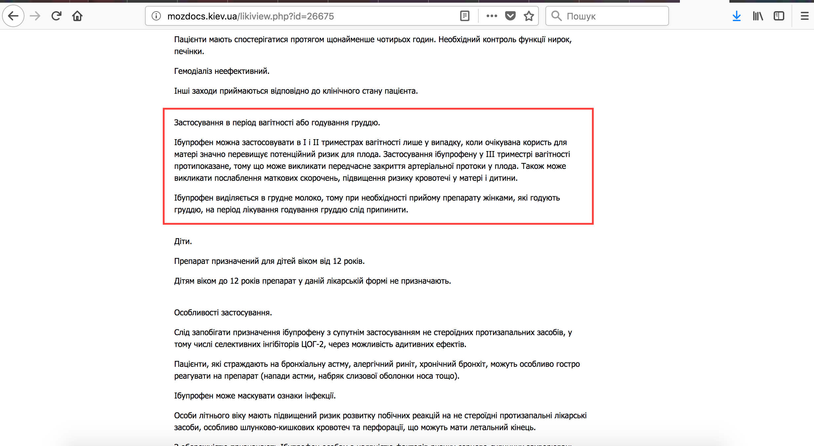
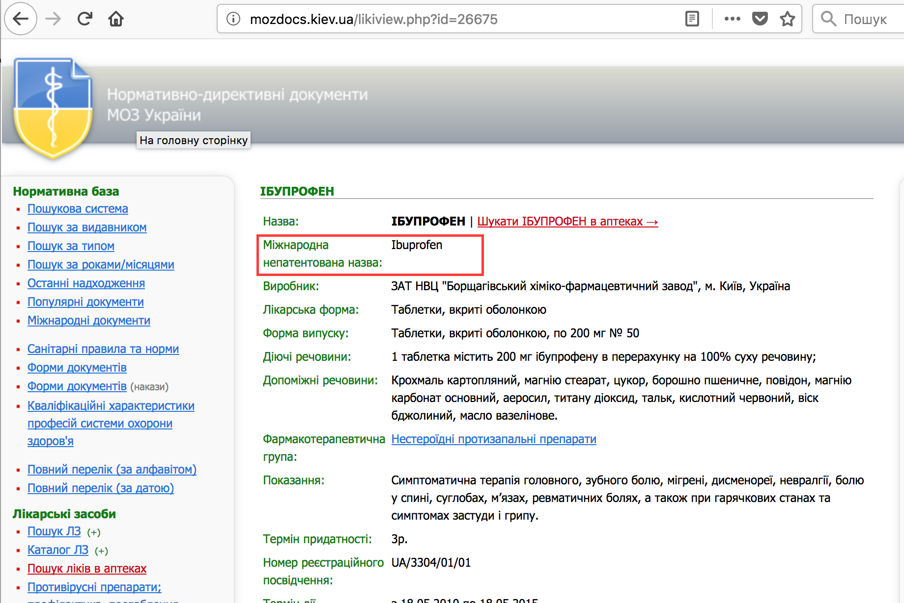
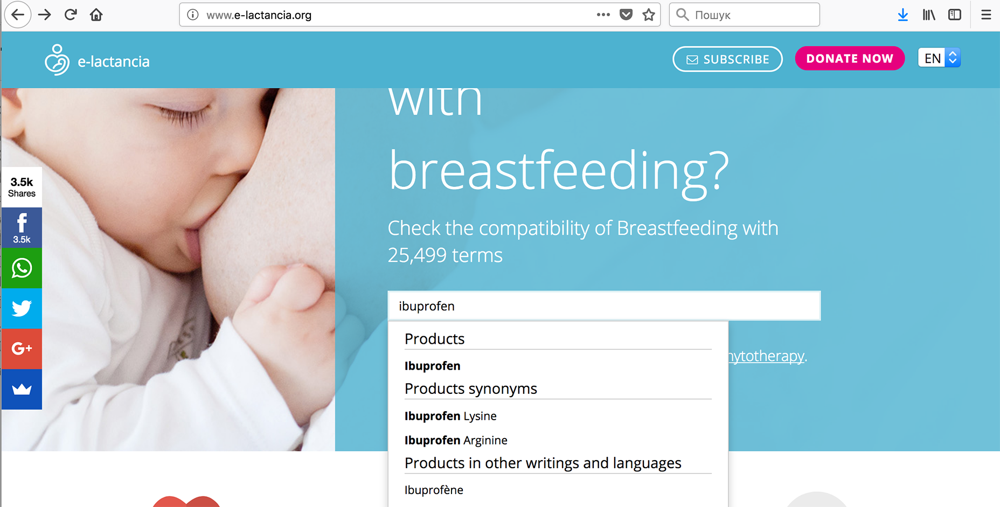
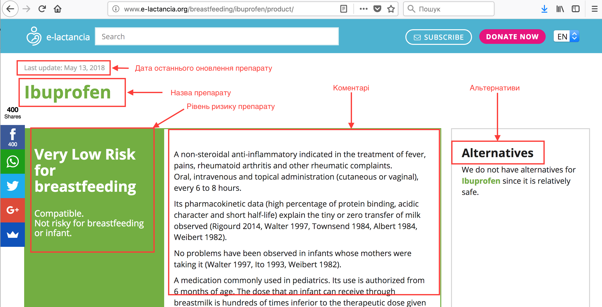
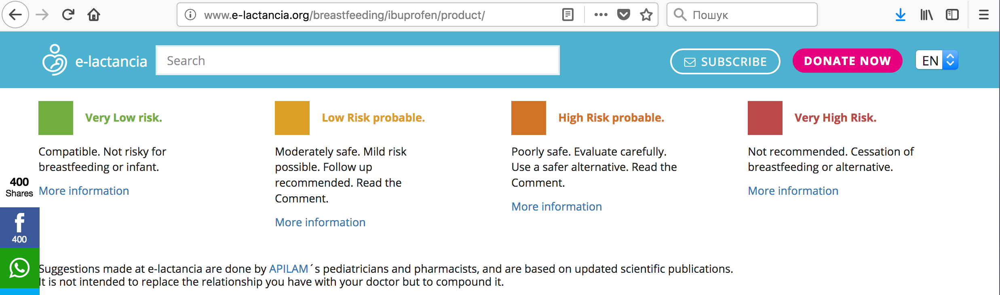
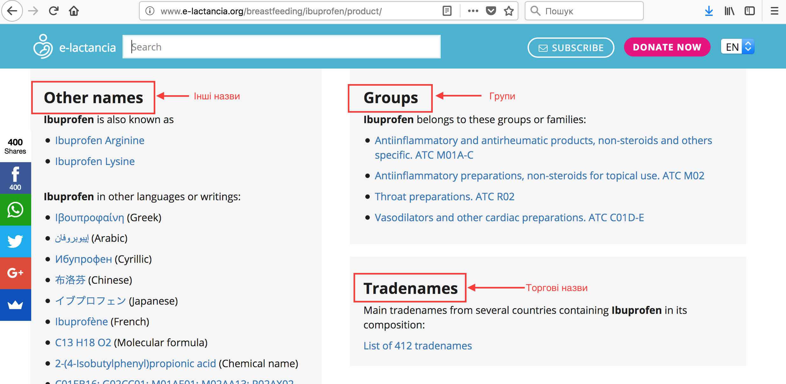
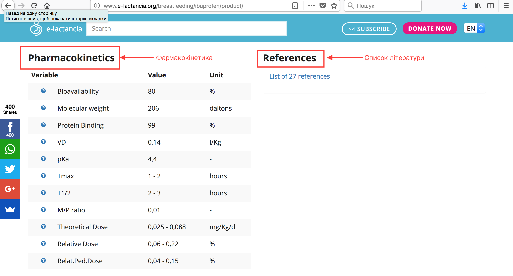
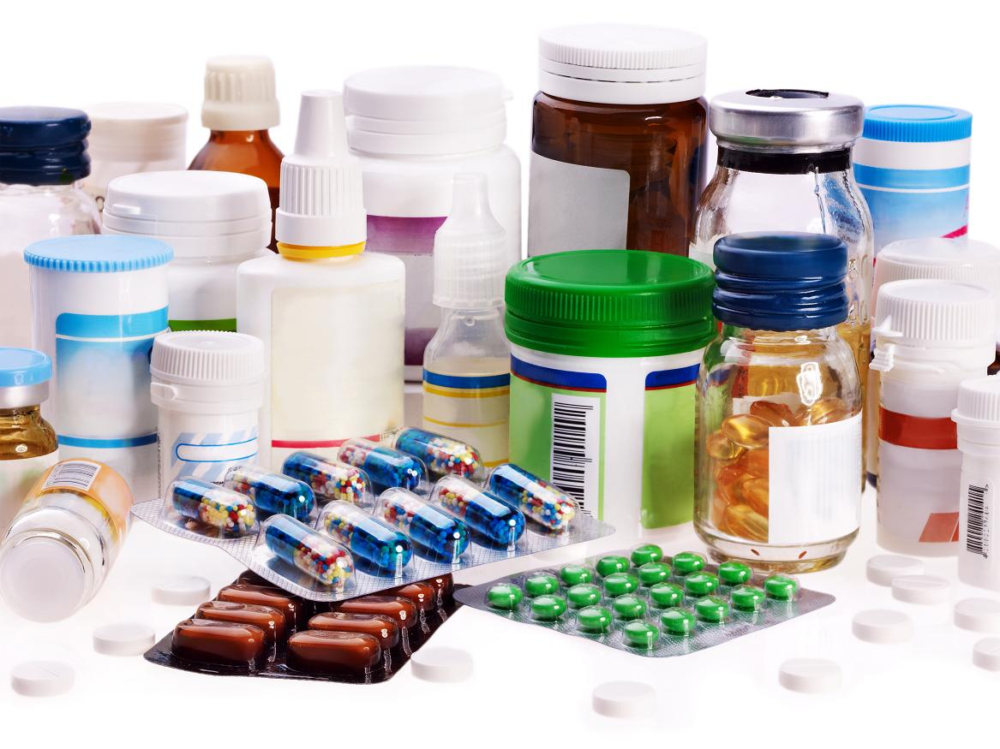

Автор: Зоряна Мацях
Жінки також хворіють, хоча не завжди в цьому зізнаються)))
Якщо годуюча мама занедужала, потрібно обов’язково звернутися на консультацію до лікаря. При потребі призначення ліків — повідомити, що Ви годуєте дитину грудьми, щоб підібрати сумісний препарат.
Але це буває зовсім не просто...
Прочитавши інструкцію для медичного застосування до лікарського засобу у розділі “Протипоказання” чи “Особливості застосування”, ми часто можемо побачити такі варіанти:

Так, ці застереження є доцільними. Адже виробники фармацевтичних препаратів не проводять в Україні дослідження на вагітних чи годуючих жінках.
Тому ми користуємося міжнародними довідниками, щоб перевірити сумісність лікарського препарату з грудним вигодовуванням.
Найпростішим в користуванні є довідник іспанського госпіталя Marina Alta — сайт e-lactancia.org.
Як ним користуватися розглянемо детальніше.
1) Шукаємо назву діючої речовини потрібного лікарського препарату латинською мовою в інструкції до нього на сайті mozdocs.kiev.ua у розділі “Міжнародна непатентована назва” і копіюємо її.
Якщо лікарський засіб містить кілька діючих речовин, потрібно копіювати їх по черзі і вводити в пошуку на сайті e-lactancia.org кожну окремо. І серед них враховувати ризик по найбільш несумісному компоненту.

2) На сайті e-lactancia.org вибираємо англійську мову і в стрічці пошуку ставимо скопійовану назву.

3) Отримуємо інформацію по препарату:

Зверху — назва препарату і дата останнього оновлення інформації щодо нього.
Інформація сайту базується на сучасних наукових дослідженнях, це рекомендації педіатрів APILAM (Асоціації сприяння і науково-дослідницьких випробувань грудного вигодовування). Ця інформація не є заміною консультації у лікаря!
Потім бачимо великий прямокутник, де вказаний рівень ризику препарату певним кольором.
Праворуч від рівня ризику вказані коментарі (Comments) та безпечні альтернативи (Alternatives), при їх наявності.
Далі розшифрування щодо рівнів ризику:

Нижче — інші назви (Other names), торгові назви препарату (Tradenames) і терапевтична група (Groups), до якої він належить.

Потім вказані дані фармакокінетики (Pharmacokinetics) і список літератури (References), де містяться посилання на наукові статті щодо проведених досліджень цього препарату.
Фармакокінетика — це розділ фармакології, який вивчає надходження (шляхи введення), всмоктування, розподіл, перетворення лікарських засобів в організмі, виведення їх з організму, а також залежність ефективності і переносимості препаратів залежно від цих процесів.
А тепер докладніше щодо таблиці фармакокінетики:

Якщо призначений Вам препарат не зеленого кольору, і не можна підібрати йому заміни, сумісної з грудним вигодовуванням, то при безпечних даних фармакокінетики можливо скласти оптимальний режим годувань дитини!

Розглянемо детальніше, які ж фактори впливають на сумісність лікарських препаратів з годуванням:
1) Шлях введення лікарських засобів, починаючи з найкращого проникнення у кров і, відповідно, у грудне молоко:
Засоби, що наносяться на соски — будьте обережними!
2) Вік дитини — у перші тижні після пологів лікарські засоби більше проникають у грудне молоко через нещільність епітелію альвеол молочних залоз.
3) Здоров’я дитини — доношеність на момент народження, особливості через ускладнення при вагітності чи пологах. У недоношених дітей ще не повністю розвинені нирки і травна система, тому їм може бути складніше вивести ліки, які безпечні для доношених дітей.
4) Час і тривалість прийому ліків.
5) Виключне грудне вигодовування чи годування грудьми в поєднанні з докормом або прикормом. Якщо дитина отримує інше харчування, крім грудного молока, то кількість ліків, які надходять дитині з молоком, зменшується.
6) Здатність дитячого організму виводити лікарські засоби.
7) Інформація з довідників на основі опублікованих досліджень щодо хімічних, фізичних і фармакокінетичних характеристик, які впливають на проникнення речовини в молоко.
8) Тривалість дії лікарського засобу — препарати короткотривалої дії безпечніші для годуючих, адже швидше виводяться з організму мами і дитини.
Варто пам’ятати, що більшість лікарських препаратів є безпечними для годуючої жінки!
Годувати грудьми з невеликою кількістю лікарської речовини в молоці є корисніше, ніж годування сумішшю.
Статтю редагувала — Таня Турчина